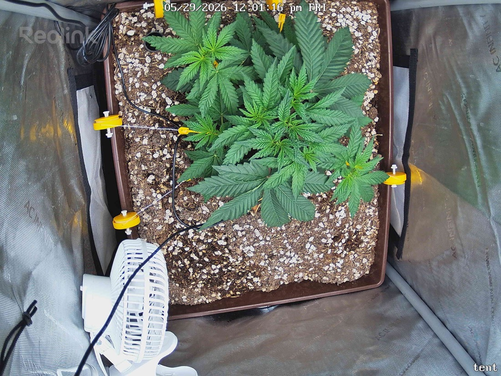

← All reports
May 29, 2026
Fri May 29, 2026 — 12:01 PM

Prognosis
Daily check-in — 2026-05-29
What changed (07:05 → 12:01)
- LST tie-downs visibly repositioned/tightened — canopy is flatter and more evenly spread across the pot vs. the morning shot where lateral branches were pulled more to the left/back.
- Center is opening up nicely; you can see daylight into the middle now, which means lower nodes will start getting direct light.
- Color is uniform deep green in both frames; no posture change suggesting stress from the re-tie.
Stress signs
- None. No tacoing, no clawing, no tip burn, no interveinal yellowing, no spotting/webbing. Leaves are flat and turgid.
- Soil surface looks appropriately dry on top (last water 5/28 afternoon) — normal at this point in the cycle.
Phase check
- Day ~31 from germ, ~24 days in tent, 6 days post-top, 1 day into LST. Multiple secondary tops are clearly developing — exactly where a topped + LST'd plant should be. On track.
Timing for your Aug 1st harvest target
- Flip to 12/12: ~June 13–15 (≈10 weeks before chop). Papaya Crush flowers ~8–9 weeks; budget 1 week for stretch transition + 1 week dry/cure buffer before "end of first week of August."
- Expect ~1.5–2× stretch after flip. In a 2×2 with current size, you have ~2 more weeks of veg before the plant will fill the tent post-stretch. That lines up with the flip date above.
- PPFD bump: now is fine. Plant has shrugged off 400 with zero stress and canopy just opened. Push to 450–500 over the next 3–4 days, then hold until flip. Move to 600–700 once flowering is established (~week 2 of 12/12).
Suggested next actions
- Bump light to ~450 PPFD today or tomorrow; reassess in 24h.
- Keep tucking/LST'ing new growth horizontally for the next ~2 weeks to maximize bud sites before flip.
- Plan next top-water for ~5/31–6/1 (4–5 day cadence); lift the pot to confirm.
Overall: Healthy, on schedule, and well-positioned for a mid-June flip to hit your early-August chop.